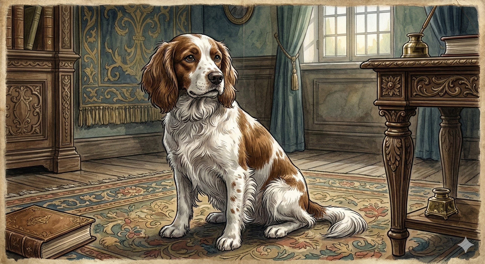
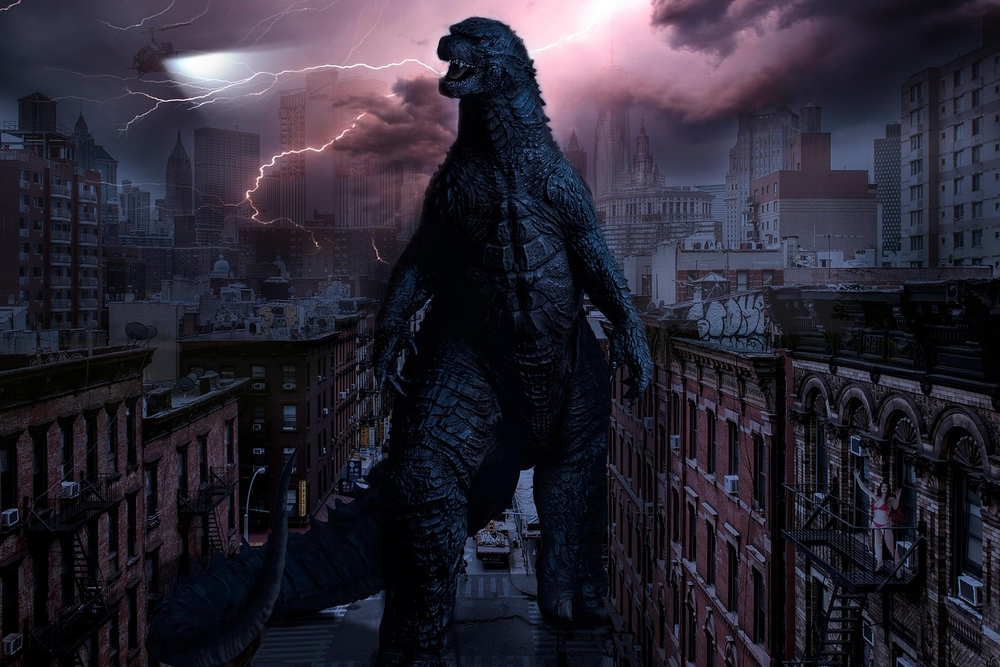
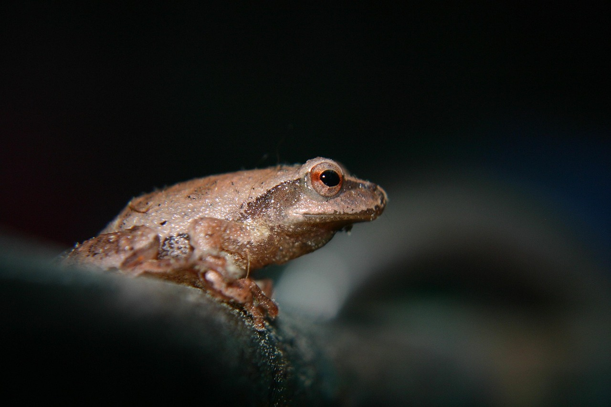

<!-- .slide: class="cinematic" data-background-video="images/russia_clipped.mp4" data-background-video-loop="true" data-background-video-muted="true" data-background-opacity="0.7" --> <img src="images/ACT.png" class="title-logo" style="height: 120px; margin-bottom: 20px;"> <!-- .element: class="title-logo" --> ASSUMPTION COLLEGE THONBURI <!-- .element: style="color: #FFD700; letter-spacing: 4px; font-size: 0.8em; font-weight: 600; margin-bottom: 10px; text-transform: uppercase;" --> # Welcome to Russia <!-- .element: style="font-size: 3.5em; margin: 10px 0; color: white;" --> ### Reading a story that makes every Russian kid cry <!-- .element: style="font-size: 1.2em; color: #FFD700; opacity: 0.9; font-weight: normal;" --> Note: Welcome students to the first lesson of the summer course. Use the video to set the scene of Imperial Russia. --- <!-- .slide: data-background-color="#050811" --> Today, we will read a famous Russian story: <!-- .element: class="text-lead" --> # 'Mumu' <!-- .element: class="highlight" style="font-size: 2em;" --> <p></p> Note: Introduce the title of the story. The dog is the emotional core of the lesson. --- <!-- .slide: class="cinematic" data-background-video="images/mission_teens_clipped.mp4" data-background-video-loop="true" data-background-video-muted="true" data-background-opacity="0.7" --> # YOUR MISSION <!-- .element: style="color: white; text-shadow: 2px 2px 15px black; margin-bottom: 40px;" --> <div style="display: flex; justify-content: center; gap: 20px;"> <div class="mission-badge"> <i class="fas fa-pen-fancy"></i> <span>Write your first story</span> </div> <div class="mission-badge"> <i class="fas fa-book-open"></i> <span>Read the Mumu story</span> </div> <div class="mission-badge"> <i class="fas fa-dog"></i> <span>Guess what happens to Mumu</span> </div> </div> Note: Go through the objectives. Focus on the creative writing and the narrative hook. --- <!-- .slide: class="cinematic" --> <div class="stage-badge" style="font-size: 0.7em;">Warm Up</div> ## Welcome to Summer School! <!-- .element: style="color: white;" --> Take a moment to tell us who you are, and what Grade 7 was like ... <!-- .element: class="text-md" style="color: #ccc;" --> <div style="display: flex; justify-content: center; gap: 30px; margin-top: 20px; font-size: 2em; color: #FFD700;"> <i class="fas fa-sun"></i> <i class="fas fa-umbrella-beach"></i> <i class="fas fa-ice-cream"></i> </div> Note: Brief icebreaker. Let students share a quick sentence about themselves and their year so far. --- <!-- .slide: data-background-color="#556b2f" --> <div class="stage-badge" style="font-size: 0.7em;">Task 1</div> ## The Giant & The Frog Write a short story about a **Giant** and a **Frog**. (Aim for about 75 words). <!-- .element: class="text-sm" --> <div class="media-container" style="display: flex; justify-content: center; gap: 20px; margin: 20px 0;"> <p></p> <p></p> </div> <timer-pill duration="12"></timer-pill> Note: Diagnostic writing task. Monitor their grammar and sentence structure secretly while they write. --- <!-- .slide: --> We are going to read a famous Russian story about a dog called Mumu. But first, let's meet the main characters in the story. <!-- .element: class="text-lead" style="max-width: 900px;" --> Note: Transitioning from the warm-up task to the core story. --- <!-- .slide: class="cinematic" data-background-video="images/gerasim_clipped.mp4" data-background-video-loop="true" data-background-video-muted="true" data-background-opacity="0.7" --> ## Gerasim: The strong giant <!-- .element: style="color: white; text-shadow: 2px 2px 10px black;" --> Note: Introduce Gerasim. Explain he is a servant and a giant of a man. --- <!-- .slide: class="cinematic" data-background-video="images/mumu_clipped.mp4" data-background-video-loop="true" data-background-video-muted="true" data-background-opacity="0.7" --> ## Mumu: The little dog <!-- .element: style="color: white; text-shadow: 2px 2px 10px black;" --> Note: Introduce Mumu. Highlight her innocence. --- <!-- .slide: class="cinematic" data-background-image="images/evil-lady.png" data-background-opacity="0.7" --> ## The Lady: The boss <!-- .element: style="color: white; text-shadow: 2px 2px 10px black;" --> Note: Introduce the antagonist. She owns the house and everyone in it. --- <!-- .slide: class="cinematic" data-background-image="images/Tatiana.png" data-background-opacity="0.7" --> ## Tatiana: The washerwoman <!-- .element: style="color: white; text-shadow: 2px 2px 10px black;" --> Note: Introduce Tatiana. --- <!-- .slide: class="cinematic" data-background-image="images/butler.png" data-background-opacity="0.7" --> ## Gavrila: The butler <!-- .element: style="color: white; text-shadow: 2px 2px 10px black;" --> Note: Introduce Gavrila. --- <!-- .slide: class="cinematic" data-background-image="images/drunk.png" data-background-opacity="0.7" --> ## Kapiton: The shoemaker <!-- .element: style="color: white; text-shadow: 2px 2px 10px black;" --> Note: Introduce Kapiton. --- <!-- .slide: class="cinematic" data-background-image="images/mumu.png" data-background-opacity="0.7" --> ## What happens? <!-- .element: style="color: white; text-shadow: 2px 2px 10px black;" --> What do you think happens to Gerasim and Mumu? Talk together. <!-- .element: class="highlight" --> <timer-pill duration="3"></timer-pill> Note: Group discussion. Let them use the 'How to Guess' strategy. --- <!-- .slide: class="cinematic" data-background-image="https://images.unsplash.com/photo-1518709268805-4e9042af9f23?q=80&w=1280&h=720&auto=format&fit=crop" data-background-opacity="0.7" --> ## Reading Time <!-- .element: style="color: white; text-shadow: 2px 2px 10px black;" --> Sit in a circle. We are going to read the story of Mumu out loud. You won't know the end of the story. <!-- .element: class="highlight" --> Note: Open the workbook/materials. Start the circle reading. --- <!-- .slide: class="cinematic" data-background-video="images/russia_clipped.mp4" data-background-video-loop="true" data-background-video-muted="true" data-background-opacity="0.7" --> ## What do you think? <!-- .element: style="color: white; text-shadow: 2px 2px 10px black;" --> Do you like the Lady? Is Gerasim's life happy or sad? Talk together. <!-- .element: class="highlight" --> <timer-pill duration="5"></timer-pill> Note: Post-reading discussion. Check their comprehension and emotional engagement. --- <!-- .slide: class="cinematic" data-background-video="images/mumu_clipped.mp4" data-background-video-loop="true" data-background-video-muted="true" data-background-opacity="0.7" --> <div class="stage-badge" style="font-size: 0.7em;">Task 2</div> ## Write the end to the story <!-- .element: style="color: white; text-shadow: 2px 2px 10px black;" --> We will check your guess tomorrow. <!-- .element: class="highlight" --> <timer-pill duration="12"></timer-pill> Note: Final writing task. Students use their predictions to write a potential ending.